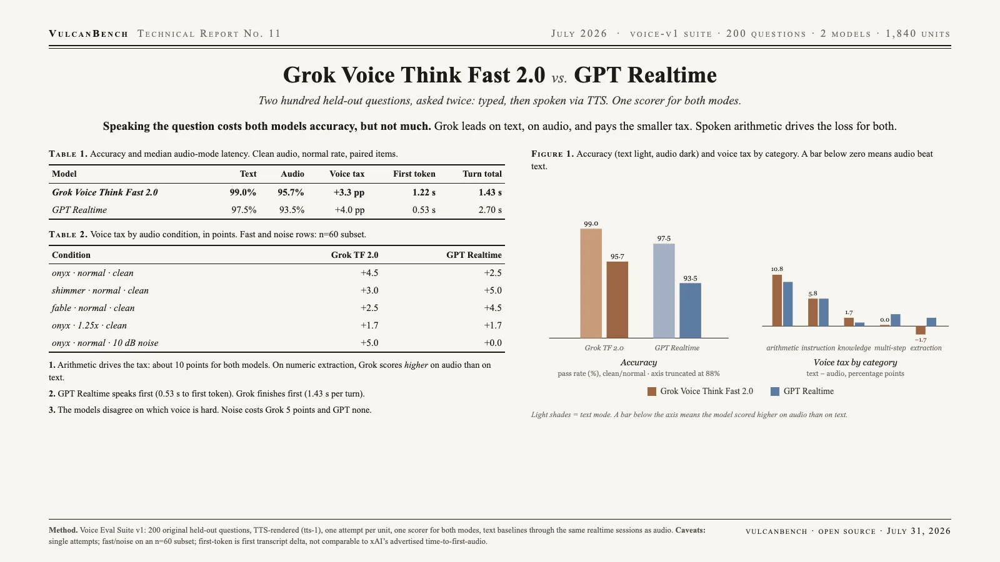

Both flagship voice models lose real accuracy when the question is spoken instead of typed, but not much, and not evenly. Grok Voice Think Fast 2.0 leads on text (99.0%), on audio (95.7%), and pays the smaller voice tax (+3.3 vs +4.0 pp). The tax concentrates in spoken arithmetic, where both models drop roughly ten points; on numeric extraction Grok’s tax goes negative. This suite measures a delta between input modalities for the same model; it makes no claim about other benchmarks.

| Model | Text | Audio | Voice tax | First token (audio) | Turn total (audio) |
|---|---|---|---|---|---|
| Grok Voice Think Fast 2.0 | 99.0% | 95.7% | +3.3 pp | 1.22 s | 1.43 s |
| GPT Realtime | 97.5% | 93.5% | +4.0 pp | 0.53 s | 2.70 s |
Audio accuracy is the clean/normal condition over paired items; latency is the median. Text baselines ran through the same realtime sessions as audio, so only the input modality varies. Zero of 1,840 units errored; zero required the pinned STT fallback; every answer carried the model’s own transcript.
The tax lives in arithmetic. Both models drop ~10 pp on spoken mental math (Grok 100 → 89.2, GPT 100 → 90.8). Spoken operands can’t be re-read, so one mis-held number sinks the computation. Every other category taxes at 6 pp or less.
Grok’s tax goes negative on numeric extraction (−1.7 pp): slightly better at pulling numbers out of spoken context than written, consistent with xAI’s transcription-accuracy emphasis in the Think Fast 2.0 release.
Latency profiles are opposites. GPT Realtime streams its first token ~2.3× sooner (0.53 s vs 1.22 s); Grok finishes turns ~1.9× faster (1.43 s vs 2.70 s). Grok’s reason-while-speaking design produces late starts and fast finishes; GPT Realtime the reverse.
Voice and noise are second-order but real. Voice choice moves audio accuracy ~2 pp, and the models disagree on which voice is hard: Grok hears British-accented fable best; GPT Realtime’s worst is shimmer. Ten decibels of ambient noise costs Grok 5.0 pp of tax and GPT Realtime none (n=60 subset, the softest numbers here).
| Category | Grok TF 2.0 | GPT Realtime |
|---|---|---|
| arithmetic | +10.8 | +9.2 |
| instruction-following | +5.8 | +5.8 |
| general-knowledge | +1.7 | +0.8 |
| multi-step-reasoning | +0.0 | +2.5 |
| numeric-extraction | −1.7 | +1.7 |
| Audio condition | Grok TF 2.0 | GPT Realtime |
|---|---|---|
| onyx · normal · clean | +4.5 | +2.5 |
| shimmer · normal · clean | +3.0 | +5.0 |
| fable · normal · clean | +2.5 | +4.5 |
| onyx · 1.25× · clean | +1.7 | +1.7 |
| onyx · normal · 10 dB noise | +5.0 | +0.0 |
Fast-rate and noise conditions ran on a seeded n=60 subset; their taxes are computed against the text baseline on the same items.
Voice Eval Suite v1: 200 original short-form questions written for this suite (never drawn from public benchmarks; TTS-rendered public evals are trivially trainable), 40 per category, objectively checkable answers. TTS via OpenAI tts-1 (voices onyx, shimmer, fable; numeric 1.25× speed), renders cached by (question, voice, rate, noise). Scoring is modality-blind by construction: a single entry point: normalize (number-words → digits so transcription style can’t skew accuracy) → exact/alias → pinned LLM judge (anthropic:claude-opus-5, rubric in-repo). Caveats: single attempt per unit (one item ≈ 0.5 pp); first-token here is time to first transcript delta, not comparable to xAI’s advertised time-to-first-audio; Gemini Live and Qwen3-Omni adapters exist but did not run.
{kind=link}